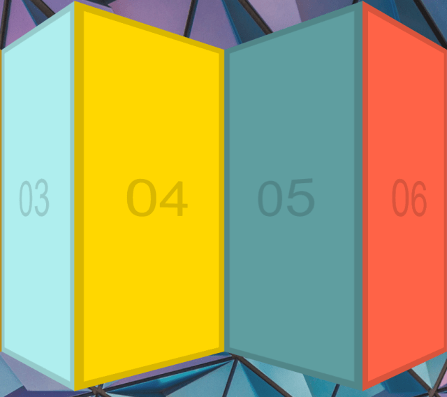

27 — Click and Drag 
主題 製作一個可拖曳移動的水平捲軸。
Click and Drag
Github
步驟 Step1. 取得頁面元素與設定初始變數 1 2 3 4 5 6 7 8 9 const slider = document.querySelector('.items'); let isDown = false; let startX; let scrollLeft; //這邊是我的寫法 const items = document.querySelector('.items') let isdown = false; let startX; let startscrollleft;
Step2. 建立基本事件框架 因為這次練習主要是在拖曳的動作，
1 2 3 4 5 6 7 8 9 10 11 12 /** 滑鼠按鍵按下 **/ slider.addEventListener('mousedown', () => { }); /** 滑鼠滑出範圍**/ slider.addEventListener('mouseleave', () => { }); /** 滑鼠按鍵放開 **/ slider.addEventListener('mouseup', () => { }); /** 滑鼠移動 **/ slider.addEventListener('mousemove', () => { });
Step3. 滑鼠按下事件 1 2 3 4 5 6 7 8 9 10 11 12 13 14 15 16 17 18 19 20 21 slider.addEventListener('mousedown', (e) => { // 給予按下的flag isDown = true; // 加上抓取效果樣式 slider.classList.add('active'); // 設定移動的初始值為目前頁面距離-當前item左邊距 startX = e.pageX - slider.offsetLeft; // 設定目前捲軸的左距 scrollLeft = slider.scrollLeft; }); //這邊是我的寫法 items.addEventListener('mousedown',(e) => { isdown = true items.classList.add('active') //設定startX為一開始點擊的位置 startX = e.clientX //startscrollleft //為一開始畫面捲動的距離,若左邊已經沒有可以捲動的距離，此時 //startscrollleft應該為 0 startscrollleft = items.scrollLeft; })
Step4. 滑鼠移出事件 1 2 3 4 5 6 7 8 9 10 slider.addEventListener('mouseleave', () => { // 將按下的flag與樣式移除 isDown = false; slider.classList.remove('active'); }); //這邊是我的寫法 items.addEventListener('mouseleave',() => { items.classList.remove('active') isdown = false })
Step5. 滑鼠按鍵放開事件 與Step4一樣，主要是取消樣式
1 2 3 4 5 6 7 8 9 10 slider.addEventListener('mouseup', () => { // 將按下的flag與樣式移除 isDown = false; slider.classList.remove('active'); }); //這邊是我的寫法 items.addEventListener('mouseup',() => { items.classList.remove('active') isdown = false })
Step6. 滑鼠移動事件 1 2 3 4 5 6 7 8 9 10 11 12 13 14 15 16 17 18 19 20 21 22 23 slider.addEventListener('mousemove', (e) => { // 若移動時的狀態非按下，不動作 if (!isDown) return; // 避免觸發其他預設事件（按下且移動預設是選取範圍） e.preventDefault(); // 設定X（當前定位）為目前頁面距離-當前item左邊距 const x = e.pageX - slider.offsetLeft; // 設定移動距離為 X-初始值 const walk = x - startX; // 設定水平捲軸的偏移量 slider.scrollLeft = scrollLeft - walk; }); //這邊是我的寫法 items.addEventListener('mousemove',(e) => { if(!isdown) return; e.preventDefault(); //畫面目前的位置，scrollLeft是個絕對位置， //startscrollleft 一開始點擊時捲動的絕對位置 //startX 畫面上的初始相對位置 //e.clientX 畫面上的相對位置 //startX - e.client = 捲動的距離 items.scrollLeft = startscrollleft - e.clientX + startX })
其他 如果有仔細看，會發現當拖曳左右移動時，rotateY效果:
1 2 3 /* 用scaleX與rotateY搭配使移動時有3D效果 */ .item:nth-child(even) { transform: scaleX(1.31) rotateY(40deg); } .item:nth-child(odd) { transform: scaleX(1.31) rotateY(-40deg); }
MDN-rotateY